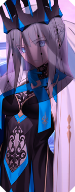
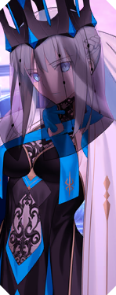

Use Castoria's NP whenever the enemy is about to use an offensive NP. If Castoria's NP is not at 100% charge or above, use Merlin's second skill, Illusion A+, instead. Use arts cards whenever possible to increase NP gauge. Use Merlin's NP ideally as soon as you have access to it. Use Morgan's NP when the enemy does not have the evade or invincible buff.
First turn: Use Spishtar's skill, Devil's Sugar. Use the first Castoria's skills, Protection of the Lake A, and Sword of Selection EX. Use second Castoria's skills, Protection of the Lake A, and Sword of Selection EX. Use Spishtar's NP.
Second turn: Use first Castoria's skill, Charisma of Hope B. Use Spishtar's NP.
Third turn: Use Spishtar's skill, Venus Driver B, and select Arts card type. Use Spishtar's skill, Multiple Starling EX. Use second Castoria's skill, Charisma of Hope B.

First turn: Use all characters' skills, then Bazett's NP.
Second turn onwards: Use Bazett's cards where possible. This will not work for all bosses in the game but will work for all early story bosses. In later stages, you need more than 3 servants to min turn a boss.